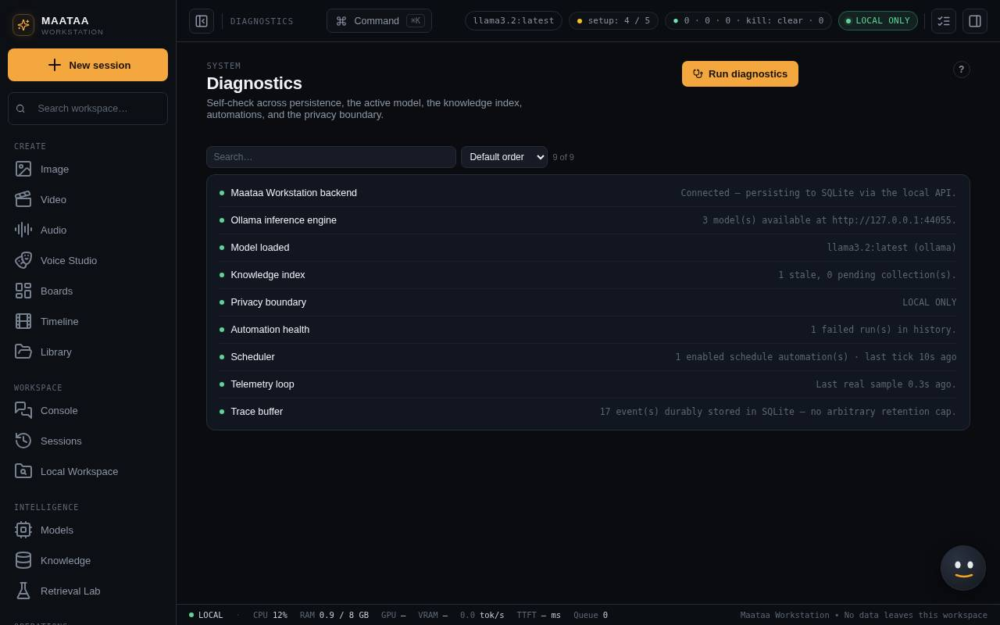

First steps
A ten-minute checklist: confirm Maataa is healthy, sync your models, chat, index a document and test search.
Do these steps once after installing, before you schedule automations or give an agent tools.
1. Check that Maataa is healthy
Open Diagnostics (System group). Each row says whether a part is working and what to do if it is not. The first row, Maataa Workstation backend, must be healthy. Rows for Ollama, ComfyUI or transcription can wait until you need them.

2. Sync your models
- Make sure Ollama is running and has at least one model (
ollama listin Terminal shows them). - Open Models and press Sync from Ollama. Your models appear as cards.
- Choose one in the model pill at the top right of the Console.
For coding tasks and Build with Maataa, a model of 7B parameters or more gives much better results than a 1–3B model.
3. Send a first message
Press New session, type a question in the box at the bottom of the Console and press Enter. The answer streams in, with timing under it. See Chat and sessions.
4. Add a document and test search
- Open Knowledge, create a collection (for example "Product notes") and add a text, Markdown, HTML or PDF file.
- Wait until the document shows its chunk count. Maataa uses your Ollama embedding model to index it.
- Open Retrieval Lab, pick the collection and ask a question the document answers. The best-matching passages appear with their scores.
When retrieval is on in the Console (the Retrieval chip under the message box), answers cite those passages.
5. Look around
- Press ⌘K for the command palette, which jumps to any screen.
- The ? next to each screen title explains what you can do there, with a link to its full guide.
- Help & Support in the System group has every guide, the FAQ, troubleshooting and a support report.